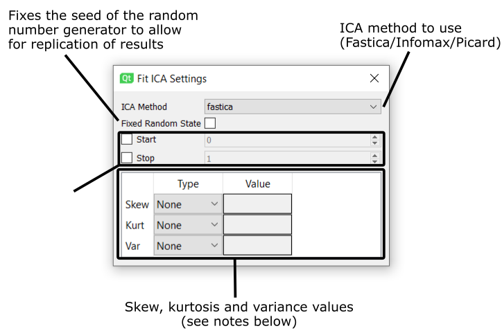

Processing¶
Raw To Epoch¶
Converts the raw data into events. The event names are defined by their ID in the “Event Names” global variable.
Uses the “Epochs” function in the MNE library
Attributes¶
| Input | ||
| Name | Type | Description |
| Raw | rawEEG | Raw data from EEG file |
| Events | epoch | Event data from EEG file |
| Output | ||
| Name | Type | Description |
| Epoch Data | epoch | Epoch data generated from inputs |
Settings Interface¶

Filter¶
Filters the data with either a low pass, high pass, band pass or notch filter
All bar the notch filter us the MNE “raw.filter” function. The notch filter uses the “raw.notch_filter” function
Attributes¶
| Input | ||
| Name | Type | Description |
| Raw | rawEEG | Raw data to be filtered |
| Output | ||
| Name | Type | Description |
| Filtered Raw | rawEEG | Filtered raw data |
Settings Interface¶
CURRENTLY UNDERGOING REVAMP
Create Evoked¶
Creates evoked (averaged event) data from epoch data
Uses the Epochs.average function in MNE with event names defined in the “Event Names” global variable
Attributes¶
| Input | ||
| Name | Type | Description |
| Epoch Data | epochs | Event data |
| Output | ||
| Name | Type | Description |
| Evoked Data | evoked | Averaged event data |
Fit ICA¶
Generates an ICA solution through the “preprocessing.run_ica” function
Attributes¶
| Input | ||
| Name | Type | Description |
| Raw/Epoch | rawEEG/Epoch | Inputted raw or epoch data |
| Output | ||
| Name | Type | Description |
| ICA Solution | ICA | Generated ICA solution for input data |
Settings Interface¶
Skew, kurtosis and variance can be set to either an int value or a float value. If a float value is used, the sources variance/kurtosis/skew scores are calculated and all sources with scores higher than the given value are used. If an int value is used, the sources scores are orders and then the source in the position equal to the int value given is used.
Apply ICA¶
Applies to the ICA solution to a set of epoch data through the ICA.apply function
Attributes¶
| Input | ||
| Name | Type | Description |
| ICA Solution | ICA | Generated ICA solution |
| Epoch Data | epoch | Epoch data to apply the ICA to |
| Excluded Channels | list | A list of channels to be excluded. Optional |
| Output | ||
| Name | Type | Description |
| Epochs | epoch | Epoch data with applied ICA solution |